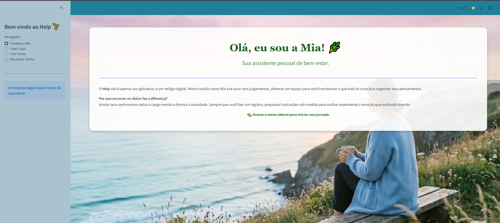

Mia Intelligence
Um diário interativo voltado para desabafo e bem-estar psicológico, ajudando a registrar sentimentos e reflexões de forma inteligente.(No fim do registro a Mia indica livros e musicas dependendo do seu humor)
Acessar Projeto